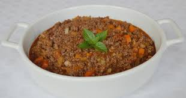
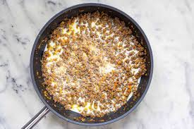
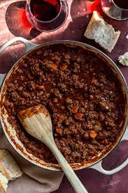
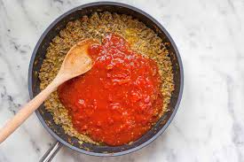

Bolognese sauce [a] known in Italian as ragù alla bolognese[b] or ragù bolognese (called ragù in the city of Bologna, ragó in Bolognese dialect), is a meat-based sauce in Italian cuisine, typical of the city of Bologna.[2] It is customarily used to dress tagliatelle al ragù and to prepare lasagne alla bolognese.
talian ragù alla bolognese is a slowly cooked meat-based sauce, and its preparation involves several techniques, including sweating, sautéing and braising. Ingredients include a characteristic soffritto of onion, celery, and carrot, different types of minced or finely chopped beef, often alongside small amounts of fatty pork. White wine, milk, and a small amount of tomato paste or tomato sauce are added, and the dish is then gently simmered at length to produce a thick sauce.
Step 1
Melt Butter with olive oil in a large saucepan over medium heat. Add onion, celery, carrot, and 1 pinch salt; cook and stir until onion turns translucent, about 5 minutes.
Step 2
Stir ground beef into vegetables;cook and stir until meat is crumbly and no longer pink, about 5 minutes. Season with 1 1/2 teaspoons salt, nutmeg, cayenne pepper, and black pepper.
Step 3
Pour milk into ground beef mixture and bring to a simmer. Cook, stirring frequently, until most of the milk has evaporated and the bottom of the pan is still slightly saucy, about 5 minutes.
Step 4
Increase heat to medium-high and pour in white wine; cook and stir until wine has mostly evaporated, about 5 minutes.
Step 5
Pour tomatoes with juice into a large mixing bowl; crush them with your hands until they resemble a chunky sauce. Pour tomato mixture into ground beef mixture; fill the tomato can with 2 cups water and stir into sauce. Bring to a boil.
Final Step
Reduce heat to low and simmer, stirring often, until mixture cooks down into a thick sauce, at least 3 hours but preferably 4 to 6 hours. Skim fat from the top of sauce if desired. Add more water if sauce is too thick. Taste and adjust seasonings before serving.